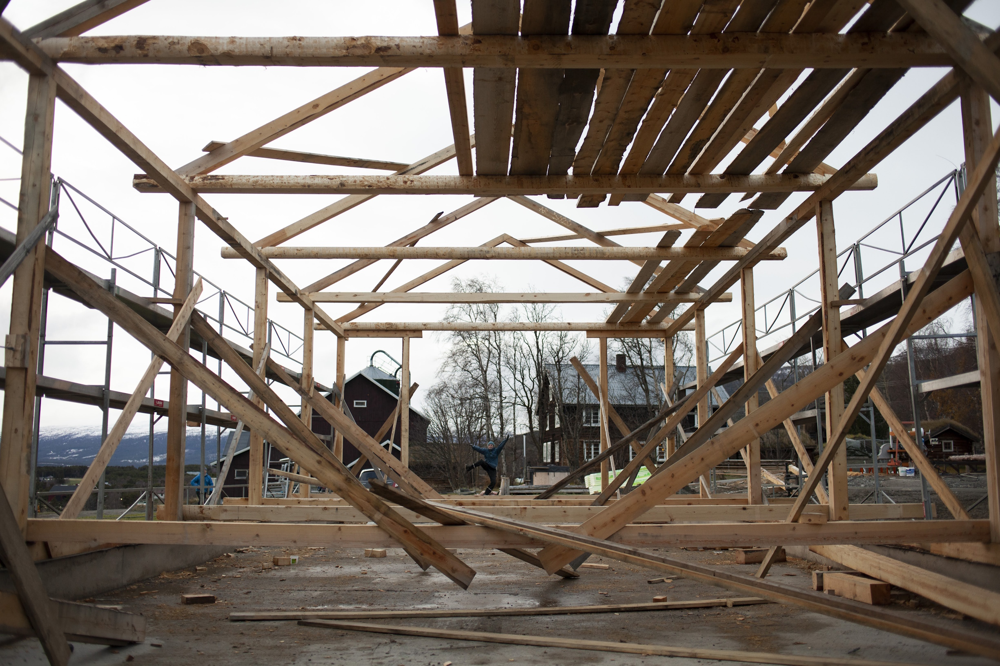
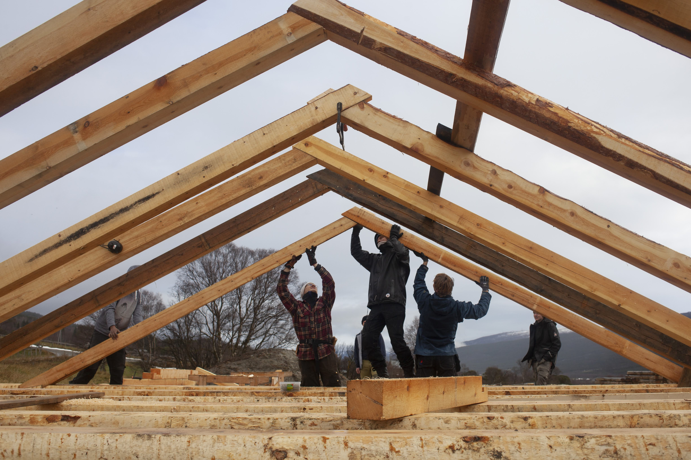

Flishus på Lesja
I starten av november 2020 dro jeg og en gjeng medstudenter til Lesja og hjalp tradisjonshåndverkeren Anton Rudi med å sette opp et flishus i grovt bygningsverk på Avdem Gård. Vi tilvirket elementene mandag til torsdag og reiste konstruksjonen på fredagen.
Det var en svært lærerik opplevelse, og kanskje den første ordentlige smaken jeg fikk på tradisjonelt bygghåndverk — å arbeide med grovt tømmer, med enkle verktøy og teknikker som har vært brukt i hundrevis av år.
Å se en konstruksjon reise seg fra bakken i løpet av én arbeidsdag er noe annet enn å tegne den. Det finnes en logikk i det tradisjonelle bygghåndverket som ikke lar seg lese ut av en tegning — det forstås gjennom hendene.

